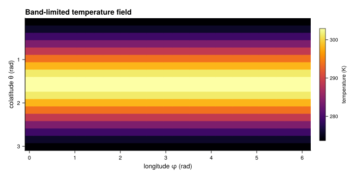
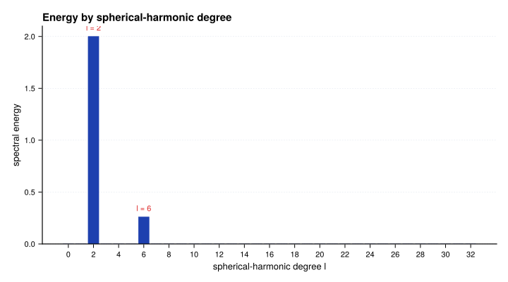
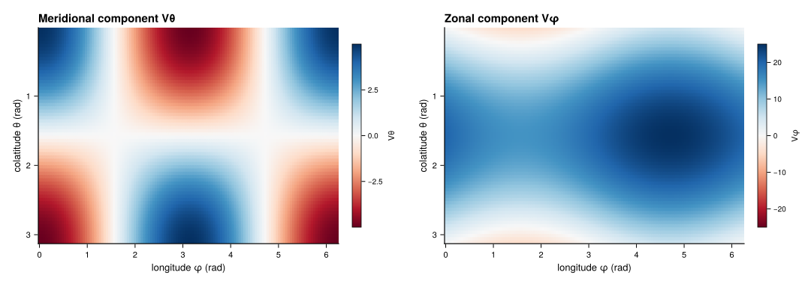
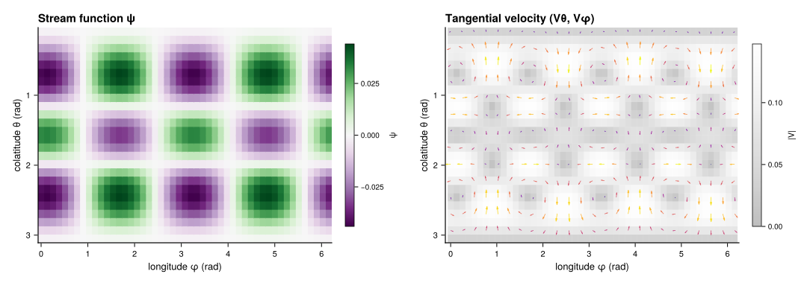
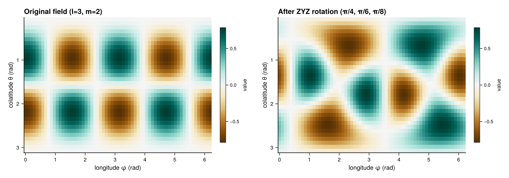

Examples Gallery
Seven copy-ready examples walk through the most common SHTnsKit workflows: scalar transforms, spectral analysis, vector decomposition, spectral PDE solving, performance measurement, coordinate rotation, and MPI distribution.
Every Julia block is executed by the package test suite so it tracks the current API. Figures are generated by docs/scripts/generate_example_figures.jl and checked into docs/src/assets/.
| Task | Example |
|---|---|
| transform a scalar field | Scalar roundtrip |
| inspect energy by degree | Power spectrum |
| decompose a tangential vector field | Vector decomposition |
| recover a stream function from vorticity | Stream function |
| measure local performance | Benchmark repeated transforms |
| change coordinate orientation | Rotate a field |
| distribute across MPI ranks | Scale out with MPI |
Inspect a configuration
Printing a configuration or plan shows grid dimensions, spectral truncation, normalization convention, and Legendre mode (on-the-fly vs table). Plans also show FFT buffer sizes. Check these before running a transform to confirm the setup matches your intent:
julia> using SHTnsKitjulia> cfg = create_gauss_config(64, 66)SHTConfig{Gauss-Legendre} with lmax=64, mmax=64, mres=1 ├── grid: 66 × 130 (north-pole-first) │ ├── θ: 0.03616 … 3.105 │ └── φ: 0.0 … 6.235, Δφ = 0.04833 ├── quadrature: Σw = 2.0 ├── normalization: :orthonormal, Condon-Shortley = true, real_norm = false ├── Legendre mode: on-the-fly ├── spectral modes: nlm = 2145 ├── φ scaling: :dft └── padding: disabledjulia> cfgSHTConfig{Gauss-Legendre} with lmax=64, mmax=64, mres=1 ├── grid: 66 × 130 (north-pole-first) │ ├── θ: 0.03616 … 3.105 │ └── φ: 0.0 … 6.235, Δφ = 0.04833 ├── quadrature: Σw = 2.0 ├── normalization: :orthonormal, Condon-Shortley = true, real_norm = false ├── Legendre mode: on-the-fly ├── spectral modes: nlm = 2145 ├── φ scaling: :dft └── padding: disabledjulia> plan = SHTPlan(cfg; use_rfft=true)SHTPlan{Gauss-Legendre} for lmax=64, mmax=64 ├── rfft: true ├── Legendre buffers: P, dPdx, dPdtheta, P_over_sinth (length = 65) ├── Fourier buffers: complex 66 × 130, rfft 66 × 66 ComplexF64 └── FFT plans: fft, ifft, rfft, irfftjulia> planSHTPlan{Gauss-Legendre} for lmax=64, mmax=64 ├── rfft: true ├── Legendre buffers: P, dPdx, dPdtheta, P_over_sinth (length = 65) ├── Fourier buffers: complex 66 × 130, rfft 66 × 66 ComplexF64 └── FFT plans: fft, ifft, rfft, irfft
Scalar roundtrip
analysis transforms a spatial field to spherical-harmonic coefficients. synthesis transforms back. For a band-limited field (one that lives within lmax and mmax), the roundtrip reproduces the input to floating-point precision.
The temperature pattern below depends only on latitude. cfg.x[i] stores $\cos\theta$ at each Gauss–Legendre node, so 1 - cfg.x[i]^2 = sin²θ peaks at the equator and vanishes at both poles. Because sin²θ is a low-degree polynomial in $\cos\theta$, it fits within the configured lmax = 16:
using SHTnsKit
cfg = create_gauss_config(16, 18; nlon=33)
temperature = [
273.15 + 30 * (1 - cfg.x[i]^2)
for i in 1:cfg.nlat, _ in 1:cfg.nlon
]
coefficients = analysis(cfg, temperature)
reconstructed = synthesis(cfg, coefficients)
error = maximum(abs, reconstructed - temperature)
@assert error < 1e-10
println("roundtrip error: $error")Spatial arrays use (latitude, longitude) layout. Dense coefficient arrays use (l + 1, m + 1) indexing because Julia is one-based: coefficients[3, 1] holds the l = 2, m = 0 mode.
For measured or arbitrary grid data, the roundtrip computes the best band-limited approximation — the projection onto the harmonics up to lmax and mmax.

Power spectrum
The power spectrum groups spectral energy by degree l. Degree l corresponds to structures with angular wavelength $\sim \pi / l$: low l means large-scale features, high l means fine detail. energy_scalar_l_spectrum sums the squared coefficient magnitudes across all orders m at each degree, returning a vector indexed from l = 0 to l = lmax.
Dense coefficients use one-based indexing: coefficients[l + 1, m + 1] stores the mode with degree l and order m. The code below seeds two modes and confirms that energy_scalar_l_spectrum recovers both peaks:
using SHTnsKit
cfg = create_gauss_config(32, 34; nlon=65)
coefficients = zeros(ComplexF64, cfg.lmax + 1, cfg.mmax + 1)
coefficients[3, 1] = 2.0 # l=2, m=0: dominant large scale
coefficients[7, 4] = 0.5 - 0.1im # l=6, m=3: weaker small scale
field = synthesis(cfg, coefficients)
power = energy_scalar_l_spectrum(cfg, analysis(cfg, field))
peak_degree = argmax(power) - 1 # subtract 1: power[1] is l=0
@assert peak_degree == 2
println("peak energy occurs at degree l=$peak_degree")
Vector decomposition
Any tangential vector field on the sphere splits uniquely into two parts:
- Spheroidal (S) — the irrotational (divergent) part, derivable from a scalar potential via the gradient.
- Toroidal (T) — the non-divergent (rotational) part, derivable from a stream function via the curl.
analysis_sphtor takes the two tangential components (Vθ, Vφ) — the meridional and zonal velocity — and returns the spectral coefficient matrices S and T. synthesis_sphtor reconstructs the spatial components from those spectra.
Tangential arrays use (latitude, longitude) layout, same as scalar fields. Vθ points toward increasing colatitude (southward); Vφ points toward increasing longitude (eastward):
using SHTnsKit
cfg = create_gauss_config(64, 66; nlon=129)
Vθ = zeros(cfg.nlat, cfg.nlon)
Vφ = zeros(cfg.nlat, cfg.nlon)
for i in 1:cfg.nlat, j in 1:cfg.nlon
θ, φ = cfg.θ[i], cfg.φ[j]
Vθ[i, j] = 5 * cos(θ) * cos(φ)
Vφ[i, j] = -5 * sin(φ) + 20 * sin(θ)
end
S, T = analysis_sphtor(cfg, Vθ, Vφ)
Vθ_reconstructed, Vφ_reconstructed = synthesis_sphtor(cfg, S, T)
velocity_error = max(
maximum(abs, Vθ_reconstructed - Vθ),
maximum(abs, Vφ_reconstructed - Vφ),
)
@assert velocity_error < 1e-10
println("vector roundtrip error: $velocity_error")
Stream function
On the sphere, the Laplacian of a spherical harmonic of degree l is $-l(l+1) Y_l^m$. Inverting this relation recovers the stream function $\psi$ from vorticity $\zeta$:
\[\psi_{lm} = \frac{-\zeta_{lm}}{l(l+1)}, \quad l \geq 1\]
The l = 0 mode is a uniform offset that carries no flow, so the loop starts at l = 1.
The stream function is a toroidal potential: the non-divergent velocity it produces appears entirely in the toroidal slot of synthesis_sphtor. Pass zero spheroidal coefficients so only the toroidal part contributes:
using SHTnsKit
cfg = create_gauss_config(24, 26; nlon=49)
vorticity_coefficients = zeros(ComplexF64, cfg.lmax + 1, cfg.mmax + 1)
vorticity_coefficients[5, 3] = 1.0 - 0.25im # l=4, m=2
stream_coefficients = similar(vorticity_coefficients)
fill!(stream_coefficients, 0)
for l in 1:cfg.lmax, m in 0:min(l, cfg.mmax)
stream_coefficients[l + 1, m + 1] =
-vorticity_coefficients[l + 1, m + 1] / (l * (l + 1))
end
stream_function = synthesis(cfg, stream_coefficients)
zero_spheroidal = zero(stream_coefficients)
Vθ, Vφ = synthesis_sphtor(cfg, zero_spheroidal, stream_coefficients)
@assert all(isfinite, stream_function)
println("stream-function range: ", extrema(stream_function))
println("maximum flow speed: ", maximum(hypot.(Vθ, Vφ)))
Benchmark repeated transforms
Use @belapsed from BenchmarkTools.jl to report the fastest sample in seconds per evaluation. The $ interpolation passes the benchmark its inputs directly. Increase the seconds=0.2 sampling budget for longer measurements.
The test field mixes several spherical-harmonic modes so the transform exercises the full lmax range. Always verify accuracy alongside timing: a fast but wrong transform is useless.
using SHTnsKit, BenchmarkTools
cfg = create_gauss_config(64, 66; nlon=129)
spatial = [
sin(2cfg.θ[i]) * cos(cfg.φ[j]) +
0.5 * sin(cfg.θ[i])^3 * cos(3cfg.φ[j])
for i in 1:cfg.nlat, j in 1:cfg.nlon
]
analysis_time = @belapsed analysis($cfg, $spatial) seconds=0.2
coefficients = analysis(cfg, spatial)
synthesis_time = @belapsed synthesis($cfg, $coefficients) seconds=0.2
recovered = synthesis(cfg, coefficients)
max_error = maximum(abs, recovered - spatial)
@assert max_error < 1e-10
println("analysis: $(round(analysis_time * 1e3, digits=2)) ms")
println("synthesis: $(round(synthesis_time * 1e3, digits=2)) ms")For a long-running application, use SHTPlan to reuse outputs and FFT workspace. Batch calls group fields that share a grid. See the Performance Guide for measurement examples.
Rotate a field
Rotations reorient a spherical-harmonic field without going through spatial space. They mix coefficients of different orders m at each degree l via Wigner d-matrices, so the spectral energy is exactly preserved.
Rotations use packed storage — a flat ComplexF64 vector of length cfg.nlm that stores only the non-redundant (l, m) modes for real fields. LM_index maps a degree-order pair to the zero-based packed index; add 1 for Julia's one-based arrays.
SHTRotation holds precomputed Wigner matrices for a given (lmax, mmax). Set Euler angles with shtns_rotation_set_angles_ZYZ — three successive rotations about Z, then Y, then Z — and apply with shtns_rotation_apply_real:
using SHTnsKit
cfg = create_gauss_config(32, 34; nlon=65)
input = zeros(ComplexF64, cfg.nlm)
input[LM_index(cfg.lmax, cfg.mres, 3, 2) + 1] = 1.0
rotation = SHTRotation(cfg.lmax, cfg.mmax)
shtns_rotation_set_angles_ZYZ(rotation, π / 4, π / 6, π / 8)
rotated = similar(input)
shtns_rotation_apply_real(rotation, input, rotated)
rotated_field = reshape(synthesis_packed(cfg, rotated), cfg.nlat, cfg.nlon)
orig_power = energy_scalar_packed(cfg, input)
rot_power = energy_scalar_packed(cfg, rotated)
@assert isapprox(orig_power, rot_power; rtol=1e-10)
println("rotated field range: ", extrema(rotated_field))Use synthesis_packed to bring packed coefficients back to spatial space. The energy assertion confirms rotation preserves total spectral power.

Scale out with MPI
When fields are too large for one process, MPI distributes latitude across ranks. The repository includes two runnable scripts:
parallel_roundtrip.jl— scalar analysis/synthesis roundtrip on distributedPencilArraystorage, verifies error across all ranks.parallel_fft_roundtrip.jl— same workflow using the transpose-basedDistTransposePlanfor m-distributed spectral storage.
mpiexec -n 2 julia --project=. examples/parallel_roundtrip.jl
mpiexec -n 2 julia --project=. examples/parallel_fft_roundtrip.jlSee Distributed Computing for package setup, data layout, and the choice between replicated and distributed spectral coefficients.